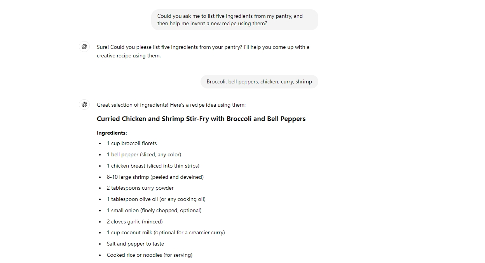
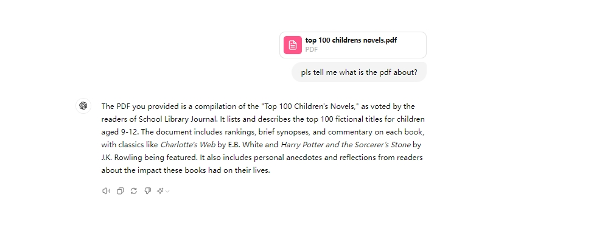
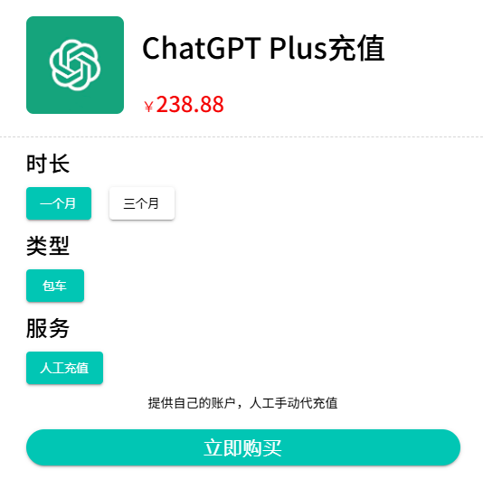

如何将 PDF 上传到 ChatGPT：综合指南

还在为冗长的报告、合同或学术论文感到困惑吗？如果你是研究人员、专业人士或学生，你一定知道从 PDF 中提取所需信息是多么耗时。想象一下，如果有一个工具可以帮你完成这些繁重的工作——汇总、分析，甚至处理你的文档。这就是 ChatGPT 的用武之地。
在本文中，我们将向你展示 如何将 PDF 上传到 ChatGPT ，开启一种简化工作流程的强大方法，甚至只需花费极低的成本即可使用增强功能。最终，你将了解如何利用这款 AI 工具来节省时间并提高生产力。
通过 PDF 了解 ChatGPT 及其功能
什么是 ChatGPT？
ChatGPT 由 OpenAI 开发，是一个强大的语言模型，旨在通过自然语言与用户交互。无论你是进行日常对话、搜索信息还是处理复杂的查询，ChatGPT 都能提供详细且情境感知的响应。ChatGPT 不仅能用于聊天，还发展成为一个多功能工具，能够协助完成内容生成、编码辅助甚至文档分析等任务。
主要特点：
- 上下文理解： ChatGPT 可以记住并建立会话中的先前交互，使其擅长处理多步骤查询。
- 多功能性： 从回答问题到生成创意内容，ChatGPT 可以适应各种用户需求。
- 可扩展性： 无论你使用的是免费版本还是 ChatGPT Plus，该模型都可以扩展以适应不同级别的使用。
不过，需要注意的是，ChatGPT 的免费版本不支持直接上传文件，包括 PDF。虽然免费版本提供了强大的对话功能，但对于需要直接与 PDF 文档交互的用户来说，ChatGPT Plus 更有价值。
为什么要将 PDF 上传到 ChatGPT？
如果你曾经花费数小时浏览冗长的 PDF 文档来查找相关信息，你就会知道这是多么繁琐和耗时。ChatGPT Plus 的真正优势就在于此：
- 使用 ChatGPT Plus 解锁高级功能 ：ChatGPT Plus 支持直接上传 PDF 或通过兼容工具上传，提供更快的处理速度、更大的上下文窗口以及高峰时段的优先访问权。这对于处理复杂或大型 PDF 文件的专业人士尤其有用。
- 快速信息检索 ：使用 ChatGPT Plus，你可以从 PDF 中提取特定信息，而无需手动搜索整个文档。
- 文档摘要 ：ChatGPT Plus 可以提供长篇报告或研究论文的简洁摘要，让你更容易快速消化大量信息。
- 交互式内容参与 ：通过 ChatGPT Plus，你可以动态地与你的 PDF 进行交互，随时提出问题并澄清细节。
以下几种场景证明了此功能的价值：
- 学生和研究人员： 快速总结长篇研究论文或教科书。
- 专业人士： 从报告、合同或其他商业文件中提取关键见解。
- 内容创建者： 分析内容丰富的 PDF，获取可在博客、社交媒体或其他媒体中重新利用的信息。
将 PDF 上传至 ChatGPT 的分步指南
要将 PDF 上传到 ChatGPT，你必须先订阅 ChatGPT Plus 。订阅 ChatGPT Plus 后，你可以按照以下步骤开始上传 PDF 并进行交互。
步骤 1：准备 PDF 文档
确保你的 PDF 整洁有序，标题和章节清晰，这有助于 ChatGPT 更好地分析文档。请检查你的 PDF 是否符合大小限制。如果 PDF 过大，请考虑将其拆分成更小的部分。
第 2 步：上传 PDF
在 ChatGPT Plus 界面中，单击聊天窗口底部标有"Message ChatGPT"的回形针图标。
- 连接到 Google Drive ：如果你的 PDF 存储在 Google Drive 中，请选择此选项。
- 连接到 Microsoft OneDrive ：对于存储在 OneDrive 中的 PDF，选择此项。
- 从计算机上传 ：直接从本地存储上传 PDF。
步骤 3：与 PDF 交互
上传完成后，你就可以开始在 ChatGPT 中与 PDF 进行交互。你可以根据需要要求它汇总、分析或提取文档中的信息。
使用 ChatGPT Plus 最大化 PDF 交互
在管理 PDF 方面，ChatGPT Plus 提供了免费版所不具备的多项优势，使其成为需要直接在平台内与复杂文件交互的用户的必备工具。以下是 ChatGPT Plus 如何增强你与 PDF 文档的交互：
直接上传 PDF 功能 ：与免费版不同，ChatGPT Plus 允许用户通过其界面直接上传 PDF，无需第三方工具即可实现无缝文档分析。此功能对于需要高效集成工作流程的专业人士和学生尤为有用。
更大的上下文窗口 ：ChatGPT Plus 可以一次性处理并保留更多信息，这对于处理更大或更复杂的 PDF 至关重要。此功能允许 AI 维护跨多个部分的上下文，确保你的查询和摘要更加准确和连贯。
更快的处理速度 ：ChatGPT Plus 在处理海量文档时，响应速度显著提升。这意味着你可以快速检索信息、生成摘要或分析特定部分，避免延迟，从而提高整体工作效率。
增强的准确性和精确度 ：ChatGPT Plus 增强了 AI 功能，让你能够提供更准确、更符合上下文的响应。这在处理详细或技术性 PDF 时尤其有用，因为它可以确保 AI 提供精准的信息，从而更轻松地从文档中提取关键见解。
对于不选择 ChatGPT Plus 的用户，有些人可能会考虑使用第三方工具通过 ChatGPT 与 PDF 进行交互。PDF2Text 或 PDF to Word 等免费工具可以将 PDF 转换为文本格式，然后粘贴到 ChatGPT 界面中。
虽然这种方法允许你使用 ChatGPT 的免费版本，但它存在一些局限性，例如潜在的格式问题以及文档多个部分之间缺乏上下文保留，手动转换和粘贴文本可能非常耗时。使用第三方工具会增加工作流程的额外步骤，从而降低效率，尤其是在处理大型或复杂文档时。
如何低成本获取 ChatGPT Plus
如果你有兴趣升级到 ChatGPT Plus，但又担心价格问题，那么通过环球巴士这样的订阅共享平台订阅是一个经济实惠的选择。操作方法如下：
环球巴士 允许多个用户分摊 ChatGPT Plus 订阅费用。通过共享订阅，你可以以低于正常价格的一小部分使用所有高级功能。环球巴士 入门指南：
访问 环球巴士 官网 ：首先访问环球巴士 网站并探索可用的订阅共享选项。

选择你的计划 ：选择适合你需求的共享 ChatGPT Plus 计划，按订阅期限和分摊费用的用户数量分类。
注册并订阅 ：按照注册流程创建账户，并选择付款方式。订阅后，你将通过共享账户访问 ChatGPT Plus。
开始使用 ChatGPT Plus ：订阅激活后，你可以立即开始使用所有高级功能，包括直接 PDF 上传和增强的处理功能。
通过使用 环球巴士 这样的平台，你可以以显著降低的成本享受 ChatGPT Plus 的全部优势，这对于注重预算但仍想要高级功能的用户来说是一个明智的选择。
结论和后续步骤
这篇博文介绍了 ChatGPT Plus 如何通过直接上传功能、更快的处理速度和更高的准确性来增强 PDF 交互——这些优势是免费版本所不具备的。虽然第三方工具提供了一种解决方法，但它们缺乏 ChatGPT Plus 的效率和无缝体验。对于希望节省成本的用户，可以通过 环球巴士 等 订阅共享平台 订阅 ChatGPT Plus ，以极低的价格获得这些高级功能的全部功能。
准备好提升你的 PDF 处理能力了吗？请按照以下步骤使用 ChatGPT Plus 上传 PDF。想要更经济实惠的解决方案，可以考虑通过环球巴士订阅以解锁所有高级功能。如果你有任何疑问或需要帮助，请在下方留言——我们随时为你提供帮助!